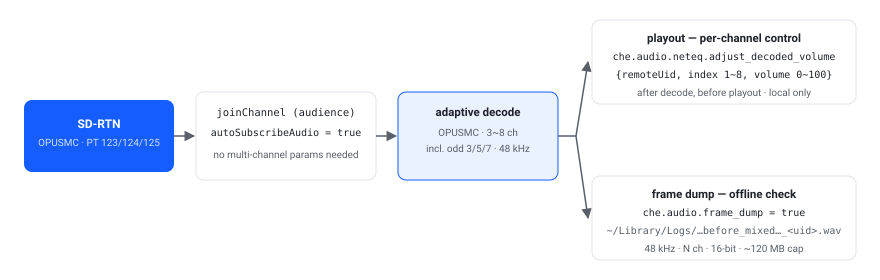
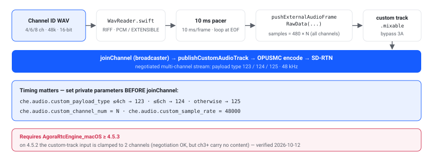
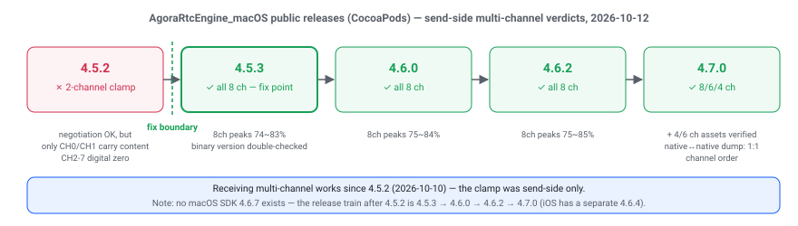

Native SDK（macOS）音频多声道（multiopus）
发送 / 接收集成要点 · 版本实测矩阵（4.5.2 / 4.5.3 / 4.6.0 / 4.6.2 / 4.7.0，2026-10-12 回归）
一、功能说明
1.1 接收（订阅播放多声道）
- 自适应解码、接收端免私参：观众角色加入频道并自动订阅音频后，Native SDK 在 payload type 123/124/125 协商机制下自适应解码 OPUSMC 流（48 kHz，3~8 声道，含 3/5/7 奇数声道——Web 端仅支持 4/6/8 偶数声道）；普通立体声/单声道流同样免配置兼容。
- 逐声道选择收听与音量：私参
che.audio.neteq.adjust_decoded_volume（remoteUid + 1-based 声道序号 + volume 0~100），作用于解码后、播放前，仅影响本端，可用来逐声道核对 Channel ID 素材。 - 音频帧 dump：私参
che.audio.frame_dump将解码后音频帧落盘（macOS 实测位于~/Library/Logs/audio_dump_playback_before_mixed_0_<时间戳>_<uid>.wav，48 kHz / N 声道 / 16bit，约 120 MB 封顶），供离线逐声道核对。

1.2 发送（发布多声道）
- 主播角色 +
createCustomAudioTrack+pushExternalAudioFrameRawData，在 join 之前设置多声道私参（payload type / channel num / sample rate），以 10 ms/帧节奏推送交错 PCM。 - 版本边界（2026-10-12 实测）：公开版 4.5.2 的自定义音轨输入被钳制为 2 声道（协商正常，但仅前 2 声道携带内容，CH2 起为数字静音）；4.5.3 / 4.6.0 / 4.6.2 / 4.7.0 已修复，8 声道内容完整送达。发送多声道请使用 ≥ 4.5.3。macOS SDK 无 4.6.7 版本（4.6.2 之后为 4.7.0）。

结论速览：发送多声道 → 用 4.5.3 及以上；接收订阅播放多声道 → 4.5.2 起即可（2026-10-10 已验证 8 声道解码、逐声道控制与 dump）。
二、版本实测矩阵（发送侧，2026-10-12）
方法：macOS 发送端 app（Demo/macOS/MultiChannelAudioSender，命令行自动化驱动）发布内置
8 声道 Channel ID 素材（48 kHz / 16bit，内容逐声道轮播，14 s 循环），Web 验证端订阅后以 200 ms 间隔对
getVolumeLevels() 连续采样 20 s，取各声道峰值判定。判据：内容级 ≈ 56~85%（有内容）；
~10% 为 16bit 素材静音段的 dither 底噪（无声的正常读数）；0% 为数字零（内容在发送端被钳制丢失）。

| AgoraRtcEngine_macOS | 协商（Web 端观测） | 20 s 各声道峰值（%） | 结论 |
|---|---|---|---|
| 4.5.2（对照组） | multiopus 8ch ✓ | [65, 65, 0, 0, 0, 0, 0, 0]（CH0/CH1 内容雷同，CH2-7 恒 0） | ✗ 2 声道钳制 |
| 4.5.3 | multiopus 8ch ✓ | [79, 79, 74, 83, 77, 78, 78, 75] | ✓ 8 声道全通（修复点） |
| 4.6.0 | multiopus 8ch ✓ | [79, 77, 78, 84, 78, 79, 80, 75] | ✓ 8 声道全通 |
| 4.6.2 | multiopus 8ch ✓ | [79, 80, 75, 85, 78, 79, 80, 78] | ✓ 8 声道全通 |
| 4.7.0 | multiopus 8ch ✓ | [83, 79, 74, 83, 79, 71, 80, 81] | ✓ 8 声道全通 |
- 4.5.2 的对照复测与 2026-10-10 的问题记录完全一致（当时另经 macOS receiver dump 证实 ch3+ 为 -96 dB 数字静音，且已排除 demo bug、
samples语义、CMSampleBuffer 推入路径、setExternalAudioSource、che.audio.input_channels私参等客户端因素）。 - 4.6.x 的秒级时间线呈「内容峰值按序出现在不同声道」的轮播特征，与素材逐声道轮播结构吻合；发送端日志全程无 push 报错。
- 接收侧：2026-10-10 在 4.5.2 上验证通过（订阅 Linux 端 8 声道 OPUSMC 流，per-user dump 为完整 8 声道、八声道 RMS -13.6~-15.5 dB 各不相同，逐声道控制即时生效），与发送侧钳制无关。
完整数据与证据见 Test/macos_sender_multi-channel_audio_test_result.md（汇总）与
Test/macos_sender_2ch_clamp_issue_20261010.md（4.5.2 问题排查记录）。
三、集成指南
3.1 发送多声道音频流（Swift，≥ 4.5.3）
// Podfile：pod 'AgoraRtcEngine_macOS', '4.7.0'（发送多声道须 ≥ 4.5.3）
// ① 多声道私参：必须在 joinChannel 之前设置
// payload type 映射：≤4ch → 123，≤6ch → 124，否则 → 125；3/5/7 声道另需 custom_channel_num
kit.setParameters("{\"che.audio.custom_payload_type\":125}")
kit.setParameters("{\"che.audio.custom_channel_num\":8}")
kit.setParameters("{\"che.audio.custom_sample_rate\":48000}")
// ② 创建自定义音轨（不经过 3A）
let trackConfig = AgoraAudioTrackConfig()
trackConfig.enableLocalPlayback = false
let trackId = Int(kit.createCustomAudioTrack(.mixable, config: trackConfig))
// ③ 主播角色加入，发布自定义音轨（不发布麦克风/摄像头）
let option = AgoraRtcChannelMediaOptions()
option.clientRoleType = .broadcaster
option.publishMicrophoneTrack = false
option.publishCameraTrack = false
option.publishCustomAudioTrack = true
option.publishCustomAudioTrackId = trackId
kit.joinChannel(byToken: token, channelId: channel, uid: uid,
mediaOptions: option, joinSuccess: nil)
// ④ 以 10 ms/帧节奏推送交错 PCM
// 注意：samples 是【全部声道的总样本数】（480 × 8 = 3840），
// 与 Linux sendAudioPcmData 的每声道语义不同
kit.pushExternalAudioFrameRawData(pcmPtr, samples: 480 * 8, sampleRate: 48000,
channels: 8, trackId: trackId, timestamp: 0)3.2 接收订阅播放多声道（Swift）
// ① 观众角色加入，自动订阅音频（接收端免多声道私参，自适应解码 3~8 声道）
let option = AgoraRtcChannelMediaOptions()
option.clientRoleType = .audience
option.autoSubscribeAudio = true
kit.joinChannel(byToken: token, channelId: channel, uid: 0,
mediaOptions: option, joinSuccess: nil)
// ② 逐声道收听：index 为 1-based，volume 0~100（0=静音），仅影响本端
// 「只听第 3 声道」= index 3 设 100，其余设 0
kit.setParameters("{\"che.audio.neteq.adjust_decoded_volume\":{\"remoteUid\":12345,\"index\":3,\"volume\":100}}")
// ③ 音频帧 dump（离线逐声道核对）
kit.setParameters("{\"che.audio.frame_dump\":true}")
// 落盘：~/Library/Logs/audio_dump_playback_before_mixed_0_<时间戳>_<uid>.wav（48 kHz/N 声道/16bit）3.3 本仓库验证 app 与自动化回归
Demo/macOS/MultiChannelAudioSender：主播角色发布内置 4/6/8 声道 Channel ID WAV，中/英文 UI；支持命令行自动化（日志实时镜像 stdout）：MultiChannelAudioSender -autoChannel <频道> -autoUid <uid> -autoWav 0 \ -autoJoin YES -autoPublish YES -autoQuitAfter 300Demo/macOS/MultiChannelAudioReceiver：观众角色纯接收，逐声道开关/音量、远端视频显示、音/视频码率走势、音频帧 dump。- 配合 Web 验证端（
Demo/web，?channel=…&uid=…&subTo=…）订阅后采样getVolumeLevels()逐声道峰值，即可对任意 SDK 版本做多声道回归（单轮约 5 分钟）。
四、注意事项
- 仅 48 kHz：多声道编解码只支持 48 kHz，素材须先重采样。
- payload type ↔ 声道数：123 → 3/4、124 → 5/6、125 → 7/8；默认 4/6/8，3/5/7 须显式设置
che.audio.custom_channel_num。 - 声道数上限 8；Web 端仅支持 4/6/8 偶数声道解码，3/5/7 只能用 Native/Linux 端验证。
- 不支持端回退：Linux 发送时不支持端加入会触发发送端回退普通 Opus（可用
che.audio.codec_unfallback强制不回退）；频道内应保证所有端支持多声道。 - 版本残留事项：修复点定位为 4.5.2 → 4.5.3（4.5.3 补测 8 声道全通，二进制版本号已核实）；声道序号映射已闭环（2026-10-12：4.7.0 原生链路 dump 与源 WAV 包络互相关，dumpCHi ↔ srcCHi 同序号对应，NCC 0.67~0.78、跨声道 ≈ 0，无重排）；4/6 声道素材已于 4.7.0 补测通过（全声道内容送达）。
- 接收端无法从回调获知实际协商声道数（SDK 无此回调）；逐声道私参为未文档化的私有参数。
Native SDK (macOS) Audio Multi-Channel (multiopus)
Send/receive integration guide · Verified version matrix (4.5.2 / 4.5.3 / 4.6.0 / 4.6.2 / 4.7.0, regression of 2026-10-12)
1. Feature Description
1.1 Receiving (subscribe & play multi-channel)
- Adaptive decoding, no private parameters needed on the receiver: join as audience with auto-subscribe, and the Native SDK decodes OPUSMC streams adaptively under the payload type 123/124/125 negotiation (48 kHz, 3–8 channels, including odd counts 3/5/7 — the Web SDK decodes even counts 4/6/8 only). Plain stereo/mono streams are equally supported out of the box.
- Per-channel listen & volume: private parameter
che.audio.neteq.adjust_decoded_volume(remoteUid + 1-based channel index + volume 0–100), applied after decoding and before playout, affecting only the local side — ideal for checking Channel ID material channel by channel. - Audio frame dump: private parameter
che.audio.frame_dumpwrites decoded frames to disk (on macOS:~/Library/Logs/audio_dump_playback_before_mixed_0_<timestamp>_<uid>.wav, 48 kHz / N channels / 16-bit, capped at ~120 MB) for offline per-channel verification.
1.2 Sending (publish multi-channel)
- Broadcaster role +
createCustomAudioTrack+pushExternalAudioFrameRawData, with the multi-channel private parameters (payload type / channel num / sample rate) set before join, pushing interleaved PCM at 10 ms per frame. - Version boundary (verified 2026-10-12): on public 4.5.2 the custom audio track input is clamped to 2 channels (negotiation succeeds, but only the first 2 channels carry content; CH2 onward are digital silence). 4.5.3 / 4.6.0 / 4.6.2 / 4.7.0 are fixed — all 8 channels arrive with content. Use ≥ 4.5.3 for multi-channel sending. There is no macOS SDK 4.6.7 (4.6.2 is followed by 4.7.0).
TL;DR: to send multi-channel audio use 4.5.3 or later; receiving multi-channel streams has been verified working since 4.5.2 (2026-10-10: 8-channel decode, per-channel control and dump).
2. Verified Version Matrix (send side, 2026-10-12)
Method: the macOS sender app (Demo/macOS/MultiChannelAudioSender, driven by command-line
automation) publishes the built-in 8-channel Channel ID WAV (48 kHz / 16-bit, content rotates across
channels on a 14 s loop); the Web verification client subscribes and samples getVolumeLevels()
every 200 ms for 20 s, taking the per-channel peak. Criteria: content level ≈ 56–85% (real content);
~10% is the dither floor of the 16-bit material's silent sections (a normal silence reading); 0% is
digital zero (content lost to the send-side clamp).
| AgoraRtcEngine_macOS | Negotiation (Web-side) | 20 s per-channel peaks (%) | Verdict |
|---|---|---|---|
| 4.5.2 (control) | multiopus 8ch ✓ | [65, 65, 0, 0, 0, 0, 0, 0] (CH0/CH1 identical content, CH2-7 always 0) | ✗ 2-channel clamp |
| 4.5.3 | multiopus 8ch ✓ | [79, 79, 74, 83, 77, 78, 78, 75] | ✓ all 8 channels (fix point) |
| 4.6.0 | multiopus 8ch ✓ | [79, 77, 78, 84, 78, 79, 80, 75] | ✓ all 8 channels |
| 4.6.2 | multiopus 8ch ✓ | [79, 80, 75, 85, 78, 79, 80, 78] | ✓ all 8 channels |
| 4.7.0 | multiopus 8ch ✓ | [83, 79, 74, 83, 79, 71, 80, 81] | ✓ all 8 channels |
- The 4.5.2 control reproduction matches the 2026-10-10 issue record exactly (which additionally proved ch3+ as -96 dB digital silence via macOS receiver dumps, and ruled out demo bugs,
samplessemantics, the CMSampleBuffer push path,setExternalAudioSource, and theche.audio.input_channelsprivate parameter as client-side factors). - On 4.6.x the per-second timelines show content peaks appearing on different channels in sequence, matching the rotating-channel structure of the material; the sender logs show no push errors throughout.
- Receive side: verified on 4.5.2 on 2026-10-10 (subscribing to a Linux-sent 8-channel OPUSMC stream; per-user dump contained all 8 channels with distinct RMS of -13.6 to -15.5 dB; per-channel control took effect immediately) — independent of the send-side clamp.
Full data and evidence: Test/macos_sender_multi-channel_audio_test_result.md (summary) and
Test/macos_sender_2ch_clamp_issue_20261010.md (4.5.2 investigation).
3. Integration Guide
3.1 Sending multi-channel audio (Swift, ≥ 4.5.3)
// Podfile: pod 'AgoraRtcEngine_macOS', '4.7.0' (multi-channel sending requires ≥ 4.5.3)
// ① Multi-channel private parameters: MUST be set before joinChannel
// payload type mapping: ≤4ch → 123, ≤6ch → 124, otherwise → 125;
// 3/5/7 channels additionally require custom_channel_num
kit.setParameters("{\"che.audio.custom_payload_type\":125}")
kit.setParameters("{\"che.audio.custom_channel_num\":8}")
kit.setParameters("{\"che.audio.custom_sample_rate\":48000}")
// ② Create a custom audio track (no 3A processing)
let trackConfig = AgoraAudioTrackConfig()
trackConfig.enableLocalPlayback = false
let trackId = Int(kit.createCustomAudioTrack(.mixable, config: trackConfig))
// ③ Join as broadcaster, publishing the custom track (no mic/camera)
let option = AgoraRtcChannelMediaOptions()
option.clientRoleType = .broadcaster
option.publishMicrophoneTrack = false
option.publishCameraTrack = false
option.publishCustomAudioTrack = true
option.publishCustomAudioTrackId = trackId
kit.joinChannel(byToken: token, channelId: channel, uid: uid,
mediaOptions: option, joinSuccess: nil)
// ④ Push interleaved PCM at 10 ms per frame
// NOTE: `samples` is the TOTAL sample count across all channels (480 × 8 = 3840),
// unlike Linux sendAudioPcmData which is per-channel
kit.pushExternalAudioFrameRawData(pcmPtr, samples: 480 * 8, sampleRate: 48000,
channels: 8, trackId: trackId, timestamp: 0)3.2 Subscribing and playing multi-channel audio (Swift)
// ① Join as audience with auto-subscribe (no multi-channel private params needed;
// the receiver decodes 3–8 channels adaptively)
let option = AgoraRtcChannelMediaOptions()
option.clientRoleType = .audience
option.autoSubscribeAudio = true
kit.joinChannel(byToken: token, channelId: channel, uid: 0,
mediaOptions: option, joinSuccess: nil)
// ② Per-channel listening: index is 1-based, volume 0–100 (0 = mute), local only.
// "Listen to channel 3 only" = set index 3 to 100 and all others to 0.
kit.setParameters("{\"che.audio.neteq.adjust_decoded_volume\":{\"remoteUid\":12345,\"index\":3,\"volume\":100}}")
// ③ Audio frame dump (offline per-channel verification)
kit.setParameters("{\"che.audio.frame_dump\":true}")
// Output: ~/Library/Logs/audio_dump_playback_before_mixed_0_<timestamp>_<uid>.wav (48 kHz/Nch/16-bit)3.3 Verification apps in this repo & automated regression
Demo/macOS/MultiChannelAudioSender: publishes the built-in 4/6/8-channel Channel ID WAV as broadcaster, zh/en UI; supports command-line automation (logs mirrored to stdout in real time):MultiChannelAudioSender -autoChannel <channel> -autoUid <uid> -autoWav 0 \ -autoJoin YES -autoPublish YES -autoQuitAfter 300Demo/macOS/MultiChannelAudioReceiver: audience-only receiver with per-channel toggles/volume, remote video display, audio/video bitrate trend charts, and audio frame dump.- Combined with the Web verification client (
Demo/web,?channel=…&uid=…&subTo=…) samplinggetVolumeLevels()per-channel peaks, any SDK version can be regression-tested for multi-channel support in about 5 minutes per round.
4. Notes and Boundaries
- 48 kHz only: multi-channel encode/decode supports 48 kHz exclusively; resample other material first.
- Payload type ↔ channel count: 123 → 3/4, 124 → 5/6, 125 → 7/8; defaults are 4/6/8, and 3/5/7 require an explicit
che.audio.custom_channel_num. - Maximum 8 channels; Web decodes even counts (4/6/8) only — 3/5/7 must be verified with Native/Linux endpoints.
- Fallback with unsupported endpoints: when Linux is sending, an unsupported endpoint joining triggers sender fallback to plain Opus (
che.audio.codec_unfallbackcan force no-fallback); ensure every participant supports multi-channel. - Residual items: the fix point is pinned to 4.5.2 → 4.5.3 (4.5.3 passes all 8 channels; binary version double-checked); the channel-index mapping is closed (2026-10-12: envelope cross-correlation between the 4.7.0 native-path dump and the source WAV shows dump channel i ↔ source channel i, NCC 0.67–0.78, cross-channel ≈ 0 — no reordering); the 4/6-channel materials were re-verified on 4.7.0 (all channels deliver content).
- The receiver cannot learn the negotiated channel count from any callback (the SDK exposes none); the per-channel private parameters are undocumented.